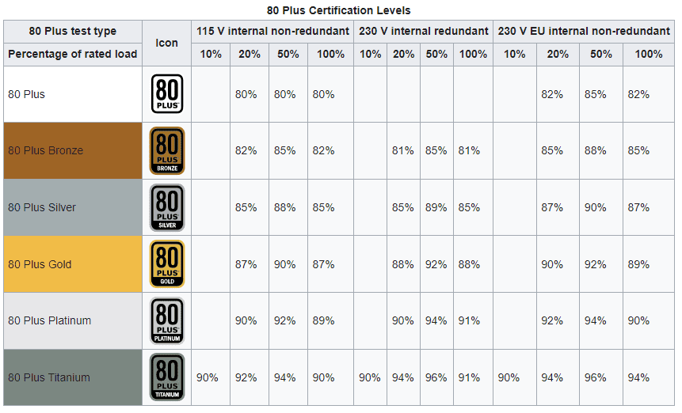
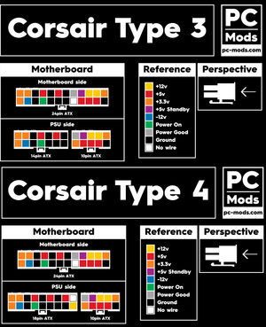

Definitie:
Sursa de alimentare a unui calculator este un dispozitiv electronic care furnizează energia necesară pentru funcționarea componentelor sistemului.

Sursele obișnuite din calculatoare transformă curentul alternativ de 110V sau 230V în diverse măsuri de curent continuu, de regula 3,3V, 5V și 12V. Principala sarcina a surselor de putere este de a asigura energia necesară funcționării componentelor hardware din cadrul unui computer.
Puterea absorbita de la o sursa de energie casnica de mare voltaj (100 - 240V) este convertita în energie de curent continuu de mic voltaj (3,3 - 12V) cu ajutorul componentelor active și pasive, prin tehnologia surse de alimentare in comutație, realizându-se totodată o mare stabilitate a tensiunii la diverse absorții de putere din partea componentelor hardware. Pentru o buna funcționare a surselor este necesara răcirea cu ajutorul radiatoarelor și ventilatoarelor pentru asigurarea unui debit de aer din mediu extern.
 - AT Power Supply – la PC-uri vechi
- ATX Power Supply – cele mai folosite
- ATX-2 Power Supply – cele mai noi